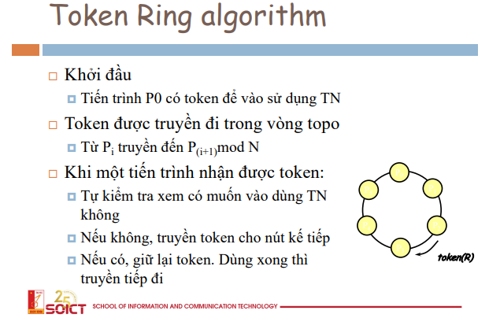

giải thuật phân tán: khi cần sử dụng sẽ broadcast hỏi toàn bộ

tài nguyên khi được sử dụng chung cần có cơ chế locking, waiting, ...
sau đây sẽ là các thuật toán
giải thuật phân tán: khi cần sử dụng sẽ broadcast hỏi toàn bộ
đại loại các node form thành vòng tròn và lần lượt truyền tay nhau chiếc vé (token) để sử dụng tài nguyên


giải thuật khá đơn giản và dễ sử dụng tuy nghiên cũng có vài điểm cần phải lưu ý